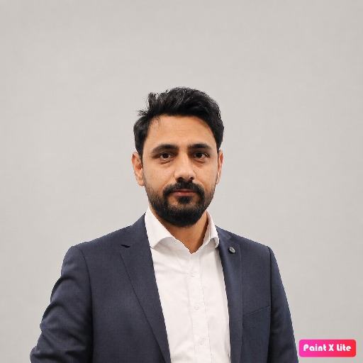
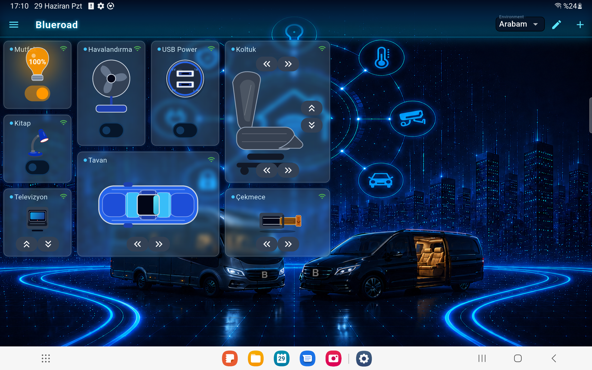
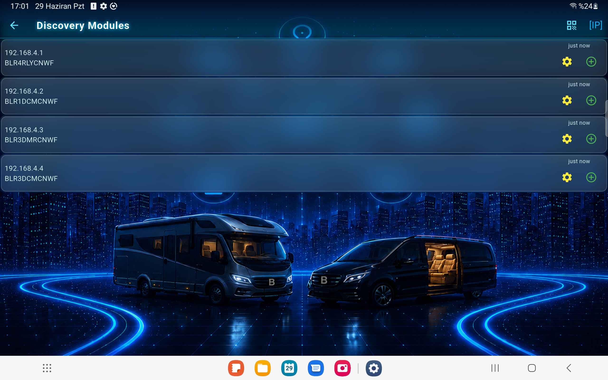
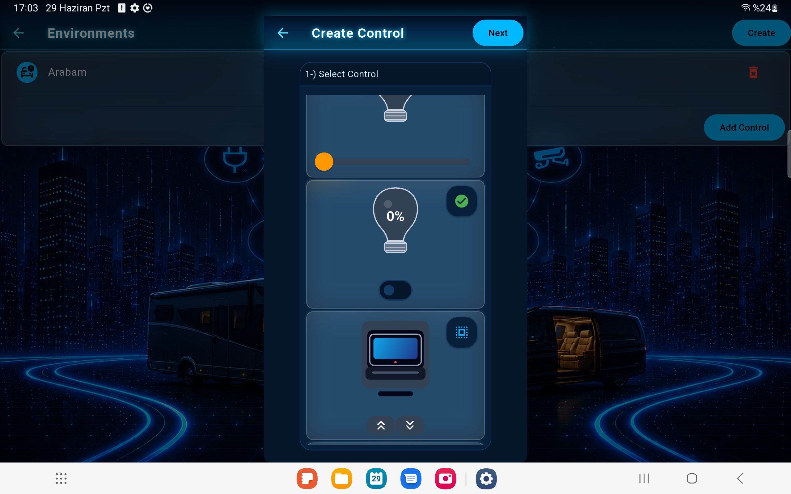
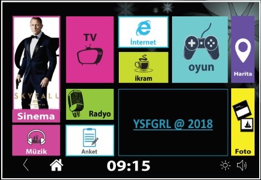

Kıdemli Yazılım Geliştirme Uzmanı
Araç elektroniğini uzaktan izleme ve yönetme çözümleri geliştiriyorum. Flutter uygulamaları ve Go mikroservislerinin yanı sıra telemetri, MongoDB, Docker ve araç içi NVR/kamera sistemleri üzerinde çalışıyorum.
Mobil uygulama · Backend · IoT
Bilgisayar mühendisiyim. Flutter ile iOS ve Android uygulamaları, Go ile backend servisleri ve mikroservisler geliştiriyorum. Mobil uygulamalardan bağlı cihazlara uzanan ürünlerde uçtan uca çalışıyorum.

01 / Hakkımda
2014'te Fırat Üniversitesi Bilgisayar Mühendisliği bölümünden mezun oldum. Kariyerimde ağırlıklı olarak Flutter ve Go ile mobil uygulamalar, REST API'ler ve mikroservisler geliştirdim. Otomotiv ve IoT projelerinde cihaz verilerinin toplanması, işlenmesi ve mobil uygulamalardan yönetilmesi üzerine çalıştım. Ar-Ge, görüntü işleme ve yapay zekâ projelerindeki deneyimimi sürdürülebilir ürünler geliştirmek için kullanıyorum.
02 / Deneyim
Araç elektroniğini uzaktan izleme ve yönetme çözümleri geliştiriyorum. Flutter uygulamaları ve Go mikroservislerinin yanı sıra telemetri, MongoDB, Docker ve araç içi NVR/kamera sistemleri üzerinde çalışıyorum.
Siber güvenlik ürünleri için Go ve Python tabanlı veri işleme servisleri ve REST API'ler geliştirdim. Tehdit verilerinin işlenmesi ve analizinde MongoDB, Elasticsearch, MinIO ve Snort kullandım.
CoreSafe projesinde yüz algılama/tanıma, görüntü işleme ve yapay zekâ modellerinin gerçek zamanlı ürün entegrasyonunda görev aldım; Ar-Ge ekibinin planlama ve koordinasyonunu yürüttüm.
Busdroid otobüs içi eğlence sistemi ve merkezi yönetim platformunun istemci uygulamaları, backend servisleri ve ağ bileşenlerini geliştirdim.
Doğuş Soft, VBE ve Calleva'da Raspberry Pi tabanlı görüntü işleme, RFID/kart sistemleri, üniversite otomasyonları ve web servisleri geliştirdim.
03 / Projeler
Araç içi multimedya deneyimini internete bağlı kalmadan da sürdüren TvBox, kendi Access Point ağı üzerinden yolcuların içeriklere erişmesini sağlar. Yolcular ağa bağlandıktan sonra çevrim dışı içerikleri izleyebilir; böylece yol boyunca eğlence, bağlantı durumundan bağımsız olarak devam eder.


Araç içindeki koltuk, aydınlatma ve televizyon sistemlerini tek bir uygulamadan yönetmeye yardımcı olan araç kontrol çözümü. Merkezi kontrol arayüzüyle yolcu alanındaki farklı donanımların durumunu görüntülemeyi ve temel işlevlerini kolayca yönetmeyi mümkün kılar.





Otobüs arkası yolcu ekranları için geliştirilen gömülü Android uygulaması, araç içi eğlence deneyimini doğrudan ekranlara taşır. Uydu üzerinden canlı yayın akışı desteğiyle yolculara seyahat sırasında televizyon içeriği sunar.

04 / Open Source
Açık kaynak kütüphanelerimi ve araçlarımı burada paylaşacağım.
05 / Teknolojiler
06 / Eğitim
Yüksek lisans · Eylül 2017 — Devam ediyor
Lisans · Eylül 2009 — Haziran 2014
07 / İletişim